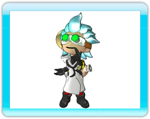
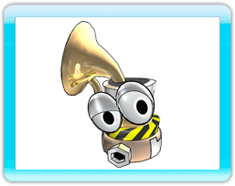

5 |
Characters |
 |
|
Doc Clock  Doc Clock is a brilliant yet eccentric inventor who makes the most amazing inventions. Unfortunately they never quite seem to work as intended. His goal in life is to invent the perfect toasted sandwich making machine, but one of his inventions goes wrong and transforms his beloved cat into a potted cactus. Doc Clock invents a time machine to travel back in time to prevent the accident. However, instead of arriving in the past, Doc Clock finds himself in a future without humans, in a world controlled by nature loving crazy robots. Overstressed by the long voyage, his time machine explodes and scatters the components for miles around. Doc Clock must find all the pieces to re-build the time machine and save his cat from its prickly fate. Sack Sack is Doc Clock's smart-mouthed robotic backpack. Sack severely dislikes being strapped to such a simple inventor and secretly plans to become ultimate ruler of the world.
Franklin Franklin is Doc Clock's cat. He's faithful, quiet, and slightly too well fed. Franklin found his way into Doc's shed through a hole in the wall and has been living off cold, half-cooked cheese toasted sandwiches ever since. |

 |
 |
 |